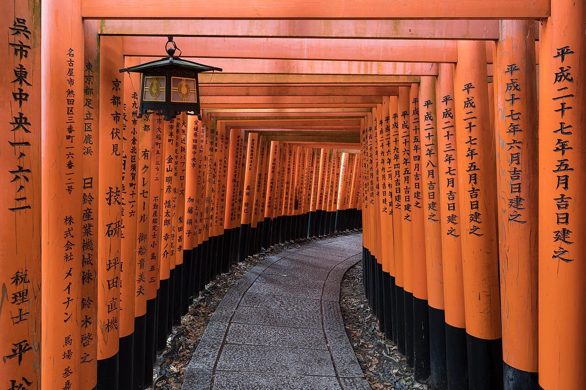

Asia
Japan
Temple paths, city lights and regional flavours
5 attractions
5 countries to discover
Find a place that speaks to your curiosity. Explore its landmarks, local food, traditions and everyday adventures.

Asia
Temple paths, city lights and regional flavours

Asia
Riverside temples, historic capitals and regional Thai cooking

Asia
Limestone waterways, living craft traditions and memorable street food

Asia
Mughal monuments, living bazaars and regional journeys

Asia
Island volcanoes, royal Java and remarkable temple landscapes